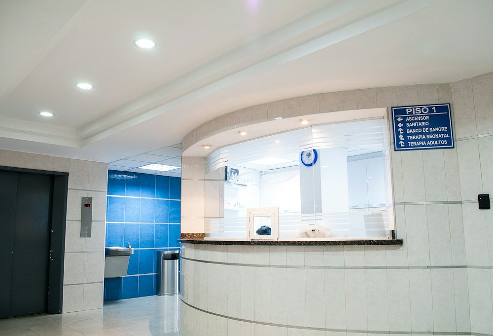

Excelência & Detalhes
Tratamento Especializado da Coluna Vertebral
Ajustes quiropráticos seguros com macas de drop e tração computadorizada para alívio imediato.

Maca de Drop & Tecnologia Quiroprática
Equipamentos modernos que proporcionam ajustes articulares precisos com máximo conforto.
Descompressão da Coluna & Hérnia de Disco
Alívio da pressão sobre os discos vertebrais e nervo ciático sem cirurgias invasivas.

Consultório Clínico Acolhedor
Ambiente calmo, higienizado e projetado para um atendimento relaxante e individual.

Recuperação Postural & Mobilidade
Exercícios complementares de fortalecimento para manutenção da estabilidade da coluna.